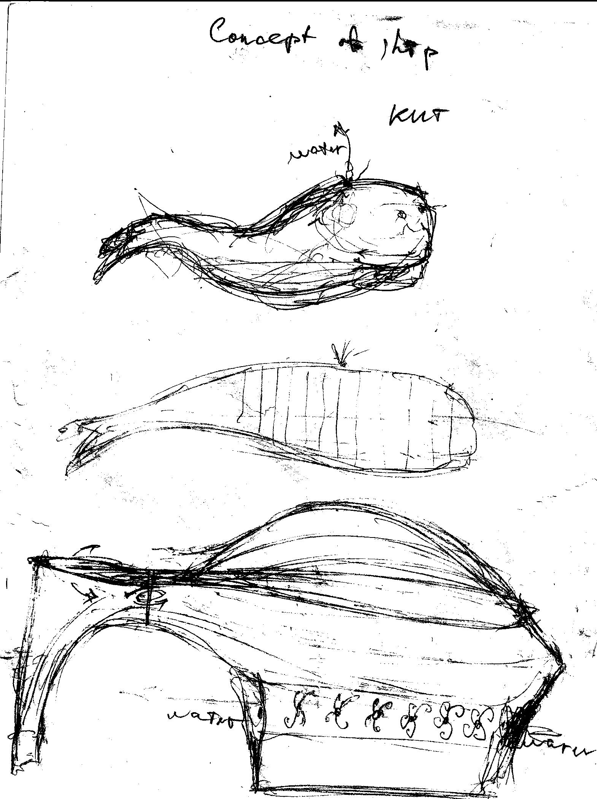
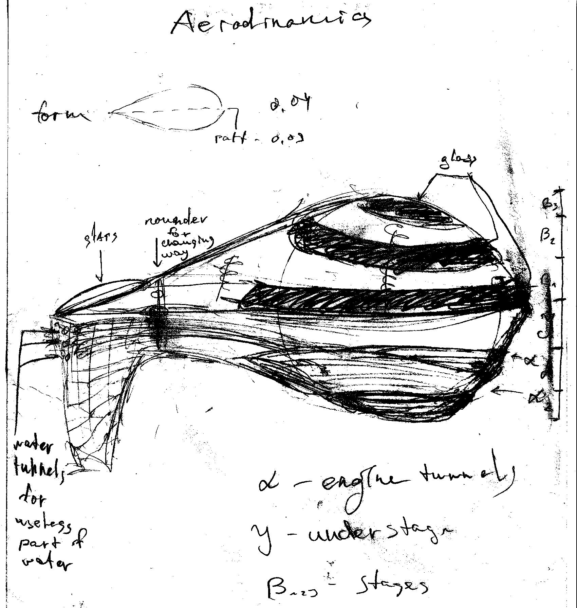

Date: 23 April 2019

Ship

Date: 23 April 2019
Date: 23 April 2019
Ship
Date: 23 April 2019
It was small project for my own that I write on way.
This is really inspiration concept that I don't want to make in real like business. I should create it in limit.
It might be after long-term business. When I might know more about engineering.
At this moment, I had only 3 different schemes of design.
I think that ship on water energy good for being in our world. It's may be combining solar and hydro energy. But in the most part of my design containing big blades into the middle of construction, that may create from water stream – energy and after it may be steam engine.
I want to make something really merging with ocean. When you cannot feel every wave because it will be like big organism.
In this ship I see only 3 floors.
Main task for this project is relaxing atmosphere that may give you possibility to abstract from other world for some time.
Small prototype cost may be
300 000 – 1 800 000$
58 – 125 weeks
In the result of chance it may be
245 600 – 2 150 500 $
93,6 - 221 weeks
In first of all I watch to ecology plusses.
There are small description about my project, I cannot show all in WorldWideWeb at the moment